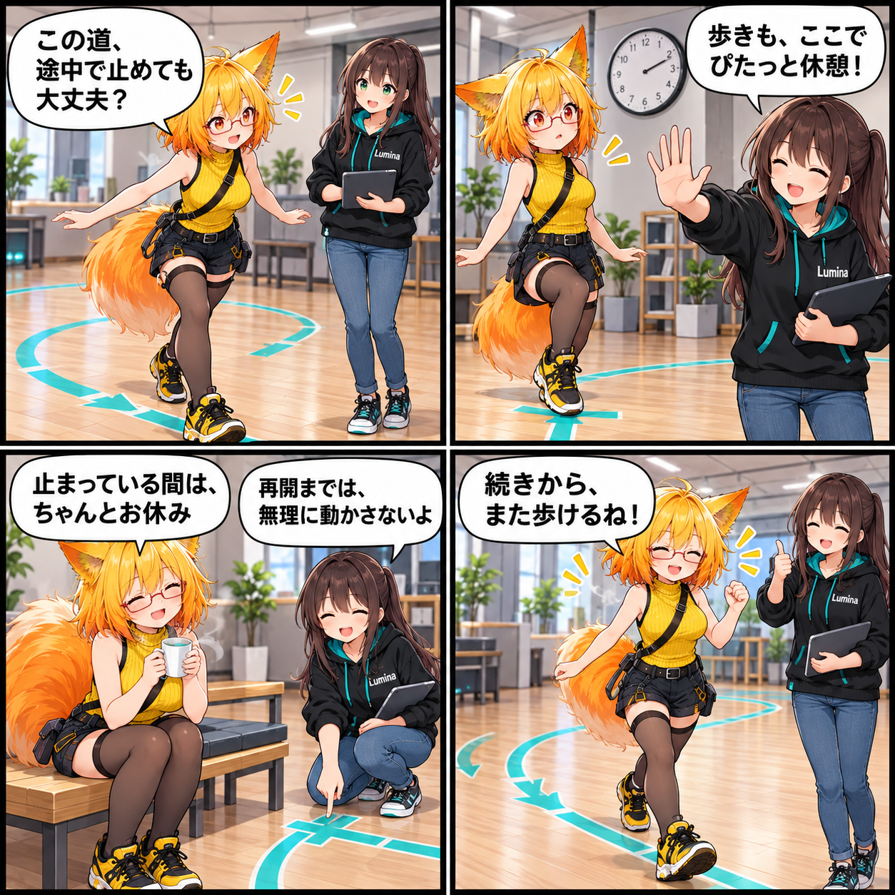

動きを止めずに、止まる時は止まる日
VASの経路移動に一時停止・再開を加え、歩行とアニメーション再生がぶつからないよう整えました。
e489bb2e2ced26e7c42dc7bc34e7664684774baf、対象は7コミットです。未コミットの変更は時刻の裏付けがないため含めていません。
経路移動に「待つ」時間をつくる
VASのアバター経路移動を、一時停止してから同じ位置で再開できるようにしました。シーケンス側で休止を要求すると、移動バックエンドも止まり、再開時には経路を最初から作り直さず、続きの地点から歩行を戻します。停止・終了時には移動の所有状態も片付けるため、次の再生と混ざりません。
動く間だけ、必要なアニメーションを守る
画面外のアバターは、通常は省電力のためアニメーション評価を止められます。一方で経路移動中まで止めると、移動に必要な評価が続きません。そこで歩行中だけ評価を維持し、一時停止中はその保護を外すようにしました。見えていない間も何でも動かし続けるのではなく、歩く必要がある時間だけを選びます。
再生の切り替わりで、余計な初期化をしない
別のアニメーションへ移るとき、従来はごく短い停止状態が通知され、その通知を受けた移動側が不要にアイドル初期化を行う余地がありました。今回、その中間状態を通知しないようにして、再生の所有権が自然に引き継がれる流れへ整えています。経路移動の失敗は通知できるようにし、歩行速度を省略した場合のスタイル推奨値も保存・読込後に保たれます。
ほかにも、アバターの再生と持ち運びを整える
同じ集計期間には、VABの可逆圧縮とメッシュ法線圧縮を追加し、VABアバターにおけるAV3 Motion Timeの再生も修正しました。lilToon AlphaMaskのPlayer透過復元も見直しています。今回は、アバターを動かす時間と、その姿を保ったまま扱うための更新が重なった一日です。
4コマの裏話
経路移動は「歩く」機能ですが、使いやすさは歩いていない時間にも現れます。床のテープの上でティータイムに入っても、再開すればちゃんと続きから。そんな安心して間を置ける動きを、練習室の場面にしました。
まとめ
VASの経路移動に一時停止・再開を加え、歩行中のアニメーション評価と休止中の省電力を両立する流れへ整えました。再生の切り替えや速度の扱いも見直し、シーケンスの途中で止めることを、自然な操作として扱えるようにしています。
本日のひとこと
歩く道にも、気持ちよく休める目印を。